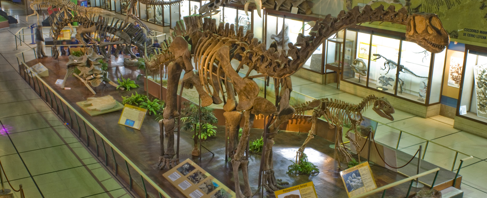
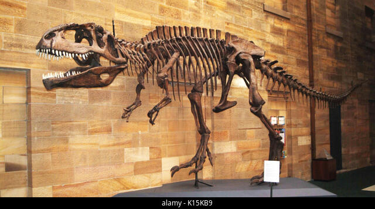
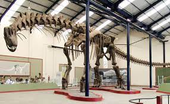
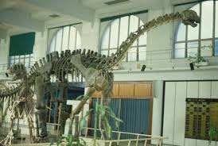
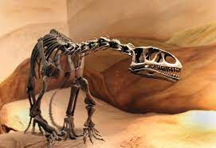
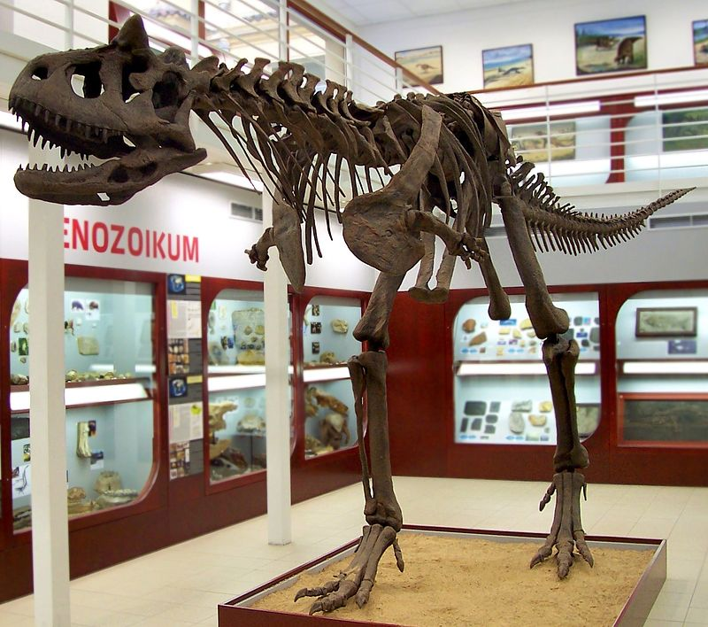

Los Mayores descubrimientos de la Argentina

Gigantosaurus CAROLINII
El "CAROLINII", considerado el Dinosaurio carnívoro más grande del mundo, supera en tamaño al famoso Tyranosaurus Rex. Fue descubierto en julio de 1993 por Rubén Darío Carolini, actual Director del Museo Municipal de Villa El Chocón, en una antigua laguna ubicada 18 km. al sur de Villa El Chocón. Se ha rescatado el 80% del material fósil del ejemplar, que se conserva en estado óptimo. Se trata de un carnívoro con extremidades delanteras reducidas, de andar bípedo y con tres dedos en cada pata. Medía 13,5 m de largo y su cadera podía alcanzar 4,6 m. Se calcula que en vida pesaba alrededor de 9500 kg. Su cabeza medía 2 m. y su diente más largo, 21 cm. Este ejemplar pertenece al Cretácico Medio de la Era Mesozoica y habitó el área de Plaza Huincul hace 90 millones de años.
Argentinosaurus Huinculensis
Huinculensis en honor a la localidad de Plaza Huincul, ubicada en la Provincia del Neuquén, en cuyas cercanías fueron hallados sus restos fósiles. Se trata del dinosaurio herbívoro más grande hallado hasta el presente. Su dimensión es aún mayor que la del "Carolinii", que era carnívoro. Pertenece al período Cretácico Medio. Se estima que tiene 98 millones de años. Fue rescatado por personal del Museo "Carmen Funes" de Plaza Huincul, en el que se exponen piezas originales del hallazgo. Es un gran saurópodo, algunas de sus vértebras dorsales son las más grandes registradas hasta la fecha. Miden 1,70 metros de alto.
Andesaurus Delgadoi
En 1987, en una campaña organizada por la Universidad Nacional del Comahue, se extrajeron vértebras y parte de la cadera de un dinosaurio al cual posteriormente se denominó ANDESAURUS DELGADOI (por su descubridor Alejandro Delgado). Fue encontrado a varios metros bajo las aguas del lago Exequiel Ramos Mejía, (Lago formado por la Represa El Chocón). Se realizó el rescate cuando el nivel del lago bajó de sus marcas históricas. Se estima que tenía 15 metros de longitud. En la actualidad, se exhibe en el Museo de Geología y Paleontología de la Universidad Nacional del Comahue (MGP).
Rebbachisaurus Tessonei
En 1988, se encontró el ejemplar más completo de Sudamérica en Villa El Chocón. Fue denominado REBBACHISAURUS TESSONEI. Es un dinosaurio saurópodo, herbívoro, de tamaño medio, que pesó alrededor de 10.000 kilos y midió 17 metros de largo. Actualmente se exhibe en el Museo (MGP). A su vez, el rebbachisaurus tessonei era uno de los manjares con que se deleitaba el mayor carnívoro de todos los tiempos, el Gigantosaurus carolinii. Según los especialistas Jorge Calvo y Leonardo Salgado, estos enormes bichos de cola y cuellos muy largos deambulaban sobre sus cuatro patas por la región hace más de cien millones de años, devorando la exuberante vegetación que cubría los pantanos.

Gasparinisaura Cincosaltensis
Hallado recientemente, este dinosaurio herbívoro se caracterizaba por ser de tamaño pequeño (1,50 m.), grácil y muy veloz. Según las especulaciones de los científicos, vivía en grupos, ya que se encontraron varios ejemplares (adultos, juveniles y crías), en un área no mayor a los 100 m2. Data del Cretácico superior, aproximadamente 90 millones de años atrás.
Carnotaurus Sastrei
Con 10 m de longitud y 4 m de altura, pertenecía al grupo de dinosaurios carnívoros sudamericanos más espectaculares: los Abelisáuridos. Poseía cuernos en su cabeza y pequeños miembros delanteros, casi atrofiados. Vivió hace 90 millones de años, durante el Cretácico Superior.
Amargasaurus Cazaui
Este dinosaurio herbívoro poseía las espinas de las vértebras notablemente alargadas y bifurcadas, sobre todo en el cuello. El ejemplar exhibido en el Museo tiene 9 m de longitud. Es más antiguo que los anteriores. Tiene 130 millones de años y data del Cretácico inferior.